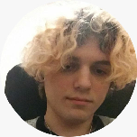

PEW is a free browser extension designed for people with photosensitive epilepsy. We aim to provide them with the tools to be safe online.
The extension analyzes videos in web pages and detects seizure risks in them. This not only helps people with photosensitive epilepsy, but also other conditions sensitive to flashing and bright lights, such as anxiety, migraines, autism, ADHD, PTSD, and others.
PEW is still in development. It is an open source project. We invite you to check out our  GitHub!
Here are some NGOs (Non-governmental organizations) we got in contact with (or that we just found helpful) while making PEW. They helped us get a better understanding of what we could do and implement in this project to make the best it can be and actually useful to people with epilepsy.
Firstly, what’s epilepsy? Epilepsy is, in simple terms a brain disorder in which a person has repeated seizures over time. Seizures are episodes of uncontrolled and abnormal firing of brain cells that may cause changes in attention or behavior.
Photosensitive epilepsy
Photosensitive epilepsy is when seizures are triggered by flashing lights or contrasting light and dark patterns. Photosensitive epilepsy is not common but it may be diagnosed when you have an EEG test. Flashing or patterned effects can make people with or without epilepsy feel disorientated, uncomfortable or unwell. This does not necessarily mean they have photosensitive epilepsy. This type of epilepsy is quite uncommon. Around 1 in 100 people has epilepsy and of these people, around 3% have photosensitive epilepsy.
PEW isn't just aimed for people with photosensitive epilepsy. Anyone sensitive to flashing lights can benefit from it.
Sensory overload
Sensory overload occurs when someone gets more input from their five senses at once than their brain can process. This can happen due to loud noises, strong smells, bright strobing/flashing lights and others.
Hey there! My name is Carolina Sepulvida Borges, I’m 18 years old. I go by any pronouns. I graduated from ORT Belgrano, Argentina this year with a technical baccalaureate with guidance in information and communication technologies
Who are we? 
Photosensitive Epilepsy warning

Hi, I'm Jeremías Scharovsky, I’m 18 years old. I go by they/them pronouns and I graduated from ORT Almagro, Argentina with a technical baccalaureate with guidance in information and mechatronics.
Hi! I’m Juan Ignacio Goñe. I’m seventeen. I go by he/him pronouns. I was the Proyect Manager on this proyect and a couple more in 2021. I graduated from ORT Belgrano, Argentina with a technical baccalaureate with guidance in information and communication technologies
Why we made PEW?
The idea for PEW was born from a school project that we needed to do as part of our final year of school (2021). We all wanted to do something that would benefit society in some way.
The only conditions that had to be met were: it had to be carried out throughout the school year and it had to be technology related. We were given a talk about accessibility and other issues the school wanted us to aim for with our proyects. That's when we came up with this idea of creating software that would allow people with photosensitive epilpsy to navigate the web safely and freely. We were disappointed, but not surprised, that such software didn't already exist, so we decided we would do it ourselves.
You’re more than welcome to send us any feedback or maybe updates you’d like us to implement. (Or anything really, we love cat pics)